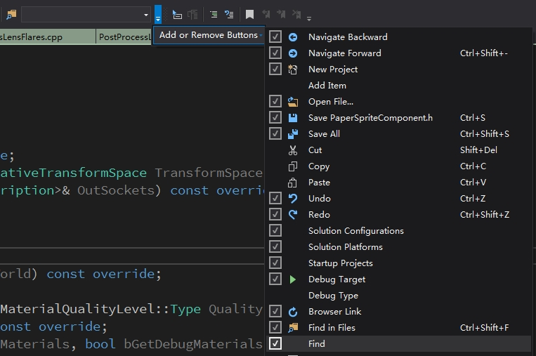

Init My Core
Table of Contents
- InitBase
- InitEmacs
- 准备工作
- 安装 spacemacs
- 初始化配置
- Emacs Debug 开启
- 问题修复
- emacs 中命令找不到
- emacs 命令调用不正确
- spacemacs 自动安装插件失败
- lua 模式下代码缩进始终为 2 个空格
- 自动补全支持
- 修改 tab 显示
- Symbol’s value as variable is void: company-backends-xxxx
- MELPA 的包不可见
- browse-url-default-windows-browser: ShellExecute failed: 找不到应用程序
- server-ensure-safe-dir: The directory ‘d:/.emacs.d/server’ is unsafe
- spacemacs python layer
- spacemacs Error (use-package): winum :config: Symbol’s value as variable is void: winum-assign-functions
- The directory `~/.emacs.d/server' is unsafe
- Init AutoHotKey
- InitVim
- InitVisualStuido
- InitJetBrainsIDE
- Shell Tools
- SSH Config
- InitZeroBrane
- InitLoopLife
- InitVimDesktop
my core note.
InitBase
windows
下面列出来初始化新机器，需要 copy 的文件和目录
├── Applications │ ├── emacs │ ├── SETUNA │ └── 无界 ├── Documents │ ├── MyCore │ ├── MyProject │ │ ├── Private │ │ │ ├── blog_content │ │ ├── Public │ │ └── SDK ├── .emacs.d ├── .ssh ├── _vimrc ├── .emacs.el ├── .emacs.local.el ├── .spacemacs ├── .zshrc ├── .zshrc.local
上面的步骤相当于执行了下面的操作：
- emacs 安装和初始化
- babun 初始化(未安装)
- vim 初始化（未安装）
InitEmacs
准备工作
安装 emacs
安装配置字体
SourceCodePro
微软雅黑
M-x describe-font 可以查看指定字体的信息
M-x describe-fontset 可以查看当前 buffer 使用的字体信息
目前 SourceCodePro-14 MicrosoftYaHei-16 可以达到等宽效果，其他字号无法实现等宽。
Windows 设置 HOME 环境变量
设置 HOME 环境变量为 D:\
emacs 配置会放置到 D:/Documents/MyCore 下面
Windows 安装 cgwin
安装 cgwin 到 d:/Applications/cygwin 目录下.
安装 cgwin 时选择安装 apt-cyg，apt-cyg 类似 apt-get 可用于安装其他软件
https://github.com/transcode-open/apt-cyg
安装 cgwin 时选择安装 git find grep lua 插件
spacemacs 会用到 git emacs 的完整功能会用到 find grep
cgwin 安装
网易 cgwin 源
http://mirrors.163.com/cygwin/
pip 安装
使用 python layer 需要安装 pip
TAGS 支持
ctags 支持
Universal Ctags
- windows
下面地址可以在线编译 universal-ctags 并下载编译好的文件。
https://ci.appveyor.com/project/masatake/ctags/branch/master/job/yjgxuou78st55ik4/artifacts
etags 支持
etags 比较弱可以放弃不用
osx 配置
使用 brew 进行安装
使用 which/where 查看 etags 路径
windows
windows 下 ctags 放置在 D:\Applications\emacs\bin,在 PATH 环境变量中添加该路径即可,需要注意的是该配置要放到自己安装的 ctags 路径之后，否则会默认使用 emacs 目录下的 ctags。
gtags 支持
global
- 安装
- global 安装
osx 下安装
# step 1 install GNU GLOBAL brew install global #下面的命令指定安装支持 pygments 和 ctags 的 global #brew install global --with-pygments --with-ctags # step 2 check global version global --version # ==> global (GNU GLOBAL) 6.5.4 which global # ==> /usr/local/bin/global
windows 下安装
下载地址 http://adoxa.altervista.org/global/
安装 GLOBAL 到 D:\Applications\GLOBAL 目录下
环境变量 PATH 中添加 D:\Applications\GLOBAL\bin
- pygments
osx 下安装
sudo pip install Pygments pygmentize --version where pygmentize
windows 下安装
easy_install Pygments
- global 安装
- 配置
# 在 ~/Documents/MyCore/Config/OnMyZshConfig/my_zshrc_config 文件中添加下面代码 export GTAGSLABEL=pygments # windows config cp dot.win.globalrc ~/.globalrc # osx or linux config cp dot.globalrc ~/.globalrc
- globalrc 配置说明
https://www.gnu.org/software/global/globaldoc_toc.html
以‘#’开头的行为注释，一个记录由一个或多个字段组成，字段之间通过‘:’分割，以换行为结束。第一个字段必须为一个标签名称，剩余的字段为变量定义.
有三种类型的变量：
- Boolean: This type has no value; existence of variable means true else false.
- Number: This type has a number value after ’#’.
- String: This type has a string value after ’=’.
Tips:
如果数据中包含‘:’或者是换行，你应该通过\\来引用它。
当包含多个定义时，前面的定义被采纳。langmap gtags_parser 属于例外,他们的定义会被连接在一起。
下面的代码指定了 exuberant-ctags 程序的路径 :ctagscom=$HOME/Applications/ctags/exuberant-ctags/ctags:\
- Boolean: This type has no value; existence of variable means true else false.
- 验证是否配置成功
gtags --explain - File 'GPATH' is skipped because it is a tag file. - File 'GRTAGS' is skipped because it is a tag file. - File 'GTAGS' is skipped because it is a tag file. - File 'test.py' is handled as follows: suffix: |.py| language: |Python| parser: |parser| library: |pygments-parser|
- globalrc 配置说明
- global 使用
global 教程
https://www.gnu.org/software/global/globaldoc_toc.html
# 生成 TAGS gtags # 查询 Print1_y 的定义 global -x Print1_y # ==> Print1_y 1 y.cpp void Print1_y() # 查询 Print1_y 的引用 global -xr Print1_x # ==> Print1_y 10 x.cpp Print1_y(); # 使用正则表达式进行查询 # The ‘-s’ command locates symbols which are not defined in ‘GTAGS’. global -sx 'Print[12].*' # ==> Print1_a 1 a.lua function Print1_a() # ==> Print1_b 1 b.lua function Print1_b() # ==> Print2_a 4 a.lua function Print2_a() # ==> Print2_a 9 b.lua Print2_a() # ==> Print2_b 9 a.lua Print2_b() # ==> Print2_b 4 b.lua function Print2_b()
- 参考资料
- global 安装配置 https://github.com/leoliu/ggtags
- global 官网 http://www.gnu.org/software/global/global.html
- global 安装配置 https://github.com/leoliu/ggtags
plantuml 支持
安装 graphviz
- osx
# 安装 graphviz brew install graphviz # 查看 graphviz 安装路径 brew info graphviz # 设置环境变量 export GRAPHVIZ_DOT=/usr/local/bin/dot
- windows
安装 graphviz http://www.graphviz.org/Download_windows.php 设置环境变量 My Computer/Properties/Advanced/Environment Variables Create GRAPHVIZ_DOT User Variables GRAPHVIZ_DOT = D:\Applications\Graphviz\bin\dot.exe
安装 plantuml
- 下载 plantuml.jar 到 ~/Documents/MyCore/Config/EmacsConfig/Resource 目录下
测试
java -jar plantuml.jar -version
问题修复
- Error: unable to access jarfile
windows 下选中 plantuml.jar 鼠标右键->属性->解除锁定
修改 puml-mode.el 文件中 puml-preview 函数内容如下：
;; old (let ((ps (start-process "PUML" buf "java" "-jar" (shell-quote-argument puml-plantuml-jar-path) (puml-output-type-opt) "-p"))) ;; new (let ((ps (start-process "PUML" buf "java" "-jar" (convert-standard-filename puml-plantuml-jar-path) (puml-output-type-opt) "-p")))
安装 spacemacs
# step0 安装 emacs emacs 安装参考:http://emacs.sexy/ # step1 克隆 spacemacs 到~/.emacs.d mv ~/.emacs.d ~/.emacs.d.bak git clone https://github.com/syl20bnr/spacemacs ~/.emacs.d # step2 克隆插件到~/.emacs.d/elpa git clone https://github.com/wolfand11/_spacemacs_elpa.git ~/.emacs.d/elpa
初始化配置
配置说明
~\DOCUMENTS\MYCORE\CONFIG\EMACSCONFIG
| custom_init.el // 自定义初始化 用于调用 Config 目录下的配置脚本
| dot.emacs.el // 跨平台的.emacs 文件
| dot.emacs.local.el // 本地特化的 emacs 配置
| dot.globalrc // global 的配置文件
| dot.spacemacs.el // spacemacs 配置
| main.el // emacs 配置入口
|
+---Config
| init-environment-variable.el // emacs 的环境变量
| init-plug-org.el // org 插件配置 -- 目前已经移到 wolfand11 spacemacs 插件中
| init-utility-function.el // 功能函数 -- 目前已经移到 wolfand11 spacemacs 插件中
|
+---Plugin
| \---wolfand11 // wolfand11 spacemacs 插件
| config.el
| funcs.el
| packages.el
|
\---Resource
\---snippets // snippets
\---org-mode
blog.snippet
eg.snippet
安装配置
cp dot.emacs.el ~/.emacs.el # you can change .emacs.local context for local cp dot.emacs.local.el ~/.emacs.local.el cp dot.spacemacs.el ~/.spacemacs # 配置 global cp dot.globalrc ~/.globalrc
Emacs Debug 开启
emacs --debug-init
在 emacs 中执行以下命令，开启出错 Debug.
M-x toggle-debug-on-error
问题修复
emacs 中命令找不到
查看 exec-path 变量，是否包含了指定命令的路径.
C-h v 可以查看变量信息 C-h f 可以查看函数信息
emacs 命令调用不正确
查看 exec-path 变量中，指定命令是否比同名的另一个命令靠前。
例如：window linux osx 下都有 find 命令，但是他们参数并不同，在 windows 下，要确保 cgwin 的 find 命令要靠前。
spacemacs 自动安装插件失败
在.emacs.el 文件中注释或者添加下面的代码
(package-initialize)
lua 模式下代码缩进始终为 2 个空格
这是因为 spacemacs 中特写了 lua-indent-level
直接修改/layers/+lang/lua/packages.el 中 lua-indent-level 的值为 4
自动补全支持
c/c++自动补全支持
(c-c++ :variables c-c++-enable-clang-support t)
lua 自动补全支持
;; config.el 中定义 (spacemacs|defvar-company-backends lua-mode) ;; package.el 中添加 (defun wolfand11/post-init-company () (progn (setq company-minimum-prefix-length 1 company-idle-delay 0.08) (when (configuration-layer/package-usedp 'company) (spacemacs|add-company-hook shell-script-mode) (spacemacs|add-company-hook makefile-bsdmake-mode) (spacemacs|add-company-hook sh-mode) (spacemacs|add-company-hook lua-mode) (spacemacs|add-company-hook nxml-mode) (spacemacs|add-company-hook conf-unix-mode) (spacemacs|add-company-hook json-mode) (spacemacs|add-company-hook graphviz-dot-mode) ) )) (defun wolfand11/post-init-lua-mode () (progn (add-hook 'lua-mode-hook 'evil-matchit-mode) (add-hook 'lua-mode-hook 'smartparens-mode) (setq lua-indent-level 4) ;;; add lua language, basic, string and table keywords. (with-eval-after-load 'lua-mode (require 'company-keywords) (push '(lua-mode "setmetatable" "local" "function" "and" "break" "do" "else" "elseif" "self" "resume" "yield" "end" "false" "for" "function" "goto" "if" "nil" "not" "or" "repeat" "return" "then" "true" "until" "while" "__index" "dofile" "getmetatable" "ipairs" "pairs" "print" "rawget" "status" "rawset" "select" "_G" "assert" "collectgarbage" "error" "pcall" "coroutine" "rawequal" "require" "load" "tostring" "tonumber" "xpcall" "gmatch" "gsub" "rep" "reverse" "sub" "upper" "concat" "pack" "insert" "remove" "unpack" "sort" "lower") company-keywords-alist)) ))
elisp 自动补全错误
(defun wolfand11/post-init-emacs-lisp () (remove-hook 'emacs-lisp-mode-hook 'auto-compile-mode))
修改 tab 显示
;; 控制 tab 对应的空格数目 (setq tab-width 4) (setq default-tab-width 4)
Symbol’s value as variable is void: company-backends-xxxx
导出 org 文件为 html 时，会提示这个错误。这是因为 company 配置错误。修改方法如下：
;; 修改 company 配置 (defun wolfand11/post-init-company () (progn (when (configuration-layer/package-usedp 'company) (spacemacs|add-company-backends : modes lua-mode nxml-mode json-mode )) ))
MELPA 的包不可见
spacemacs 默认设置是支持 MELPA 和 marmalade 的。请检查.emacs.el 中是不是添加了下面的代码，导致默认设置出错。
(package-initialize)
browse-url-default-windows-browser: ShellExecute failed: 找不到应用程序
emacs 无法打开 url 链接，报如题错误。
检查系统是否设置了默认浏览器。Win7 控制面板/程序/设置默认程序。将 Chrome 设置为默认程序就可以了。
server-ensure-safe-dir: The directory ‘d:/.emacs.d/server’ is unsafe
spacemacs python layer
1 使用 python layer 需要安装 pip
spacemacs Error (use-package): winum :config: Symbol’s value as variable is void: winum-assign-functions
错误消息：Error (use-package): winum :config: Symbol’s value as variable is void: winum-assign-functions
需要更新报错的包。执行 M-x package-list-packages 命令，先删除旧版本的 winum 包，然后再安装新版本的 winum。
The directory `~/.emacs.d/server' is unsafe
这是因为切换用户后，文件夹所有者不正确。右键点击 ~/.emacs.d/server 文件夹，在安全(Security)选项卡中，点击高级(Advanced)按钮，选中所有者(Owner)选项卡，修改文件夹所有者为你当前的用户就可以了。
Init AutoHotKey
执行 init.ahk 脚本 (点击打开脚本，就会自动执行)
开机自动执行 init.akh 脚本
# 将 init.ahk 的快捷方式复制到下面路径 cp init-shortcut.ahk.lnk "C:\Users\guodong\AppData\Roaming\Microsoft\Windows\Start Menu\Programs\Startup" # 查看自动运行路径下的文件 ls -al 'C:\Users\guodong\AppData\Roaming\Microsoft\Windows\Start Menu\Programs\Startup'
InitVim
安装 vim
osx
https://github.com/macvim-dev/macvim/releases
windows
直接在软件中心搜索安装
初始化配置
cp dot.vimrc ~/.vimrc :: 在 windows 下 vim 的配置为_vimrc cp dot.vimrc ~/_vimrc
InitVisualStuido
配置
设置语言
Tools-Options-Environment-InternationalSettings
设置代码格式
工具-选项-文本编辑器-C#-格式设置
导入配置文件
- Go to Tools > Options
- Go to Environment > "Import and Export Settings"
- Change the path to existing one
使用
常用快捷键
| 快捷键 | 说明 |
|---|---|
| Shift+Alt+o | (VA)打开文件 |
| Shift+Alt+s | (VA)查找 Symbol |
| Ctrl+k+Ctrl+o | (VS)头文件源文件切换 |
| Ctrl+Shift_F12 | Enable/Disable VsVim |
Find a File
方案 1
按照下图所示，在 tool 工具栏开启搜索框：

- Ctrl+/ 定位到搜索框同时输入>
- 输入 of + 空格 + 文件名称
方案 2
- Ctrl+, Ctrl 键加逗号可以打开智能搜索框
安装各种插件
VsVim
在 Extension 中搜索 VsVim 进行安装
重启 VisualStudio
Visual Assist
http://www.wholetomato.com/
C:盘根目录下搜索 VA_X.dll 可以找到该插件的安装目录
Productivity Power Tools
在 Extension 中搜索 Productivity Power Tools 进行安装
功能介绍 http://blog.chenxu.me/post/detail?id=f9d99fbe-f41d-465b-ab09-91024382daf6
官网地址 https://marketplace.visualstudio.com/items?itemName=VisualStudioProductTeam.ProductivityPowerTools
C# Outline 2015
在 Extension 中搜索 C# Outline 进行安装
该插件可以让 VS 支持函数内语句的折叠
Nuget
windows 包管理软件。
http://www.nuget.org/
使用方法
- 为 VisualStudio 安装 NuGet.Tools.vsix 插件. （或者在 Extension 中搜索 NuGet 进行安装）
- VisualStudio 中 Quick Launch 中输入 package manager,选择打开 package mangager 窗口.
- 搜索 Autofac，选择合适的版本。进行安装。
LicenseHeaderManager
在 Extension 中搜索 LicenseHeaderManager 进行安装
使用说明文档: https://github.com/rubicon-oss/LicenseHeaderManager/wiki
插入 LicenseHeader 的快捷键 Alt+l
JetBrains.ReSharperUltimate
CodeMaid
支持对函数进行排序
http://www.codemaid.net/
InitJetBrainsIDE
插件安装
方案 1 在线安装
File/Setting/Plugins/Browse repositories
方案 2 直接 copy 之前的 plugin 目录
plugin 目录位置参考下面文档说明。
window7 下目录地址为 C:\Users\guodong\.PyCharm2017.1\config\plugins
ideavim
初始化配置
:: window7 下配置方法 cp dot.ideavimrc /cygdrive/c/Users/Administrator/.ideavimrc
问题解决
ideavim 屏蔽了 AutoHotKey 中键盘的设置
不要使用 AutoHotKey 来实现 Alt 和 Ctrl 按键的重新绑定，使用 HotkeyControl 绑定按键，就不会有该问题。
AutoPEP8
设置编程语言后缀名
File/Settings/Editor/File Types
在上面设置项中，可以为编程语言设置多个后缀名
设置项目过滤文件夹和文件
File | Settings | Project Structure
在上面设置项中，可以为项目设置过滤的文件夹
File | Settings | Version Control | Ignored Files
IDEA 配置 Lua 开发环境
EmmyLua
Shell Tools
windows babun
安装
::在 cmd 中运行 install 脚本 install /target D:\Applications\babun
##安装完成后再 shell 中执行下面命令 compinit cp .zcompdump .zcompdump-$HOSTNAME-$ZSH_VERSION
更新
执行.babun 目录下的 update.bat
包管理
pact --help
修改默认 shell
## 显示默认的 shell 默认使用 zsh 作为 shell babun shell ## 修改默认 shell 为 bash babun shell /bin/bash
检查配置
babun check
配置 Terminal 字体大小
点击左上角，弹出菜单后选择 Option 进行设置。
ErrorFixed
切换用户后，babun 无法使用 zsh
## 执行下面命令 什么也不显示 babun shell ## 重新安装 babun 后修复该问题
安装后默认没有使用 zsh
## 执行下面命令 显示当前 shell 为 /bin/bash babun shell ## 执行下面命令 切换为 zsh babun shell /bin/zsh
[oh-my-zsh] Insecure completion-dependent directories detected:
修改方案：chmod -R 755 <Insecure completion-dependent directories path>
0 [main] zsh 9196 child_info_fork::abort: address space needed by 'langinfo.dll'
oh-my-zsh 配置
基本安装配置参考 oh-my-zsh 官网:http://ohmyz.sh/ 配置文件列表: dot_zshrc dot_zshrc.custom dot_zshrc.local Soliah.zsh-theme（主题配置） 配置说明: 通用的自定义配置放在 dot_zshrc.custom 中，本地的自定义配置放在 dot_zshrc.local 中， dot_zshrc 会加载 dot_zshrc.custom 和 dot_zshrc.local 调用下面的命令进行配置: cp dot_zshrc ~/.zshrc cp dot_zshrc.local ~/.zshrc.local cp Soliah.zsh-theme ~/.oh-my-zsh/themes/Soliah.zsh-theme
SSH Config
rm -R ~/.ssh cp -R SSHConfig ~/.ssh chmod 600 ~/.ssh/id_rsa password:******gh # 配置.ssh 路径， 对 /etc/passwd 文件内容做如下修改： # 旧内容 - Administrator:unused:500:513:Dong Guo,U-WIN-10\Administrator,S-1-5-21-2357673517-1225067227-1474234480-500:/cygdrive/c/Users/Administrator:/bin/zsh # 新内容 - Administrator:unused:500:513:Dong Guo,U-WIN-10\Administrator,S-1-5-21-2357673517-1225067227-1474234480-500:/cygdrive/d :/bin/zsh # 可以使用下面方法调试 ssh 对 private key 的选择 ssh -vT git@github.com ssh -vT git@git.coding.net
Coding.net SourceTree 公钥配置
选择 SourceTree 工具/选项 菜单。在 SSH 客户端配置 设置组中，SSH 客户端选择 OpenSSH，SSH 密钥选择你自己的密钥文件。
已经配置了 ssh，每次 push 依然需要填写用户名和密码
这是因为远程链接使用了 https，而没有使用 git@github.com
# 显示 remote url git remote -v origin git@github.com:USERNAME/REPOSITORY.git (fetch) origin git@github.com:USERNAME/REPOSITORY.git (push) # 切换 remote url git remote set-url origin git@github.com:USERNAME/REPOSITORY.git
InitZeroBrane
在菜单栏中选择 Edit/Preference/Settings: User 会打开配置文件 user.lua，将自己的配置内容 copy 到打开的配置文件中就可以了。
InitLoopLife
LoopLife 是一个 Jekins Job。主要用于执行每天重复需要做的事情。
配置 LoopLife
1. 安装运行环境
1.1 安装 Jekins 以及相关的插件
Jekins 官网 https://jenkins.io/
Jekins 配置使用，请参考有道笔记 Jekins.md 文档中所列插件全部安装。
1.2 安装 Python 以及相关的插件
使用下面命令安装 enum
eazy_install enum34
或者 pip install enum34
2. 创建 LoopLife Jekins Job
2.1 选择 New Item, Item name 使用 LoopLife, 类型选择 Freestyle project
2.2 Build Triggers/Build Periodically 配置为 0 H(3-7) * * * 表示每天凌晨 3-7 点，自动触发构建
2.3 添加环境变量
UnityPath="D:/Applications/Unity/2018.2.5f1/Editor/Unity.exe"
LoopLifePy="d:/Documents/MyCore/Config/LoopLife/LoopLife.py"
2.4 Build 中添加 Execute Windows batch command, Command 设置如下：
python %LoopLifePy% --OptUnityProj %UnityPath%#%WORKSPACE%/Demo_PC
python %LoopLifePy% --Reboot 0
测试 LoopLife OptUnity 功能：python ./LoopLife.py --OptUnityProj "D:/Applications/Unity/2018.2.5f1/Editor/Unity.exe"#D:\Applications\Jenkins\workspace\LoopLifeX/Demo_PC
对 Unity 项目执行操作
参考 UnityNotes.md 文档中，LoopLife OptUnity 脚本部分内容。
InitVimDesktop
首先 安装 TotalCommander
其次 到下面官网地址下载安装 VimDesktop
官网地址 https://github.com/goreliu/vimdesktop
TC 快捷键列表 https://github.com/goreliu/vimdesktop/wiki/TC%E5%BF%AB%E6%8D%B7%E9%94%AE%E5%88%97%E8%A1%A8